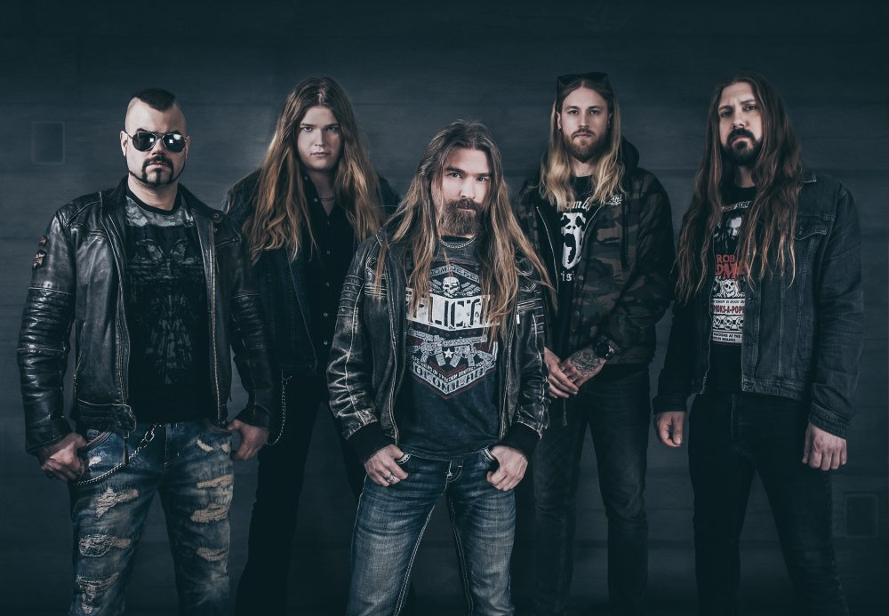

Общая Фотография
 Joakim Brodén
Йоаким Броден
Биография
Родился 5 октября 1980 года в шведском городке Фалун.
Отец Бродена Ульф Олоф Броден из Швеции
А его мать Анна из Чехии.
У него двойное гражданство.
Йоаким сказал, что стал металлистом, когда ему было три или четыре года
Из-за музыкального клипа для Twisted Sister «We Not Gonna Take It».
Йоаким женат с 2015 года.
Владеет шведским и английским языками.
На них, в основном, и исполняет песни Sabaton как вокалист.
Pär Sundström
Пaр Сундстрём
Биография
Родился 8 июня 1981 года в шведском городке Фалун.
Участвовал в шведской дет-метал-группе Aeon, где был басистом.
В 1999, вместе с Рикардом Сунденом и Ричардом Ларсоном создал группу Sabaton
В которую позже пригласил Оскара Монтелиуса и Йоакима Бродена.
В 2012 из группы ушли гитаристы Рикард Сунден и Оскар Монтелиус
А также клавишник Даниэль Мюр
И
Барабанщик Даниэль Муллбак
На их место пригласил новых участников.
По сей день играет в Sabaton на бас-гитаре
И
Акустической гитаре, так же исполняет бэк-вокальные партии.
Tommy Johansson
Томми Юханссон
Биография
Родился 26 октября 1987 года в городе Буден, Швеция.
Известен своей работой в качестве гитариста
В шведской метал-группы Sabaton
А также в качестве ведущего вокалиста и гитариста
В пауэр-метал группы Majestica (ранее ReinXeed).
В 2009 году стал чемпионом по караоке в Швеции.
В 2016 году он присоединился к Sabaton
В качестве гитариста, заменив Тоббе Энглунда.
Записал три альбома с пауэр-метал группой Golden Resurrection
Вместе с певцом Кристианом Лильегреном из группы Narnia.
В последние годы ведёт свой канал на YouTube
Chris Rörland
Крис Рёланд
Биография
Родился 27 декабря 1986 года в шведском городке Фалун.
С 2010 года участвовал в шведской пауэр-метал-группе Nocturnal Rites
Где был гитаристом.
В 2012 году, перед началом тура Swedish Empire, был приглашён в группу Sabaton
В которой по сей день играет на ритм-гитаре и акустической гитаре
Также исполняет бэк-вокальные партии.
Сотрудничал с прогрессив-метал коллективом Cronian
Записав для их альбома Enterprise 2008 года
Партии лидер-гитары в трёх композициях.
Использует гитары компании .
Hannes Van Dahl
Ханнес Ван Дал
Биография
Карл-Ханнес Дал родился в Швеции и во взрослом возрасте сменил имя на Ханнес Ван Дал.
Его интерес к тяжёлой музыке возник из-за катания на скейтборде и его двоюродного брата
Который дал ему послушать такие группы как Metallica, Judas Priest и Iron Maiden.
Первой метал-песней, услышанной Далем была «For Whom the Bell Tolls».
В возрасте 10 лет он начал играть на бас-гитаре, но быстро потерял интерес
И перешёл на барабаны.
Его первая группа называлась «The Motherfuckers».
Позже он основал группу «Downthrust», но в 2009 году
Присоединился к Evergrey, заменив Йонаса Экдала.
Учитель Ван Даля по игре на барабанах Сноуи Шоу
Увидев в нём потенциал, порекомендовал Ван Даля для Evergrey.
Во время работы Сноуи Шоу в качестве барабанщика Sabaton
Ван Дал присоединился к Шоу в качестве
Барабанного техника на четырёх концертах.
После репетиции в The Abyss он присоединился к Sabaton
В качестве официального участника группы
Во время тура Swedish Empire Tour в 2013 году.
В 2014 году Sabaton выпустили альбом Heroes
Который стал первым альбомом Sabaton
Записанным группой с Ханнесом Ван Далем.